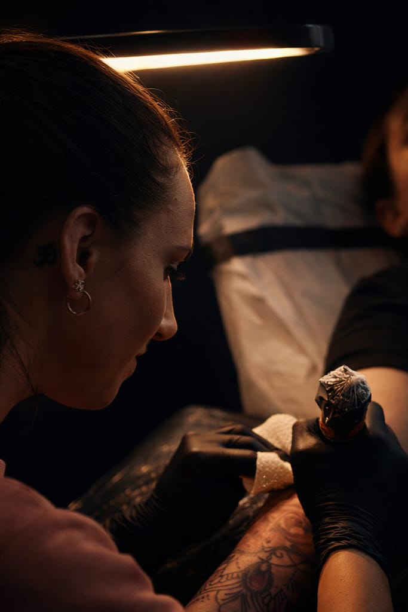

Con 14 anni di esperienza nel mondo del tatuaggio, mi sono specializzata esclusivamente nel realismo, la tecnica più complessa e affascinante dell'arte del tattoo.
Ogni tatuaggio che realizzo è un'opera d'arte unica, studiata nei minimi dettagli per raccontare la tua storia sulla pelle. Ritratti, animali, composizioni complesse: trasformo le tue idee in capolavori indelebili.
Il mio studio a Roma è uno spazio intimo e professionale dove arte, passione e tecnica si incontrano per creare il tuo tatuaggio perfetto.
Ci incontriamo per discutere la tua idea, dimensioni, posizione e stile. Analizziamo insieme riferimenti e ispirazioni.
Creo un disegno personalizzato unico per te. Il design viene perfezionato fino alla tua completa soddisfazione.
Durante la sessione di tatuaggio lavoro con precisione chirurgica per garantire il massimo realismo e dettaglio.
Ti fornisco istruzioni complete per la cura del tatuaggio e resto disponibile per qualsiasi domanda durante la guarigione.
Recensioni reali di chi ha vissuto l'esperienza in studio
"Irene è semplicemente straordinaria. Il ritratto del mio cane è così realistico che sembra una fotografia. Professionalità e attenzione ai dettagli unica nel suo genere."
"Irene ha trasformato la foto di mia nonna in un'opera d'arte permanente sulla mia pelle. Ogni volta che lo guardo mi commuovo. Grazie infinite, sei una fuoriclasse."
"Ho aspettato mesi per avere un appuntamento, ma ne valeva assolutamente la pena. I dettagli sono incredibili, lo studio è pulito e l'atmosfera è rilassante e accogliente."
"Esperienza fantastica dall'inizio alla fine. Mi ha ascoltato, ha capito esattamente quello che volevo e ha realizzato qualcosa di ancora più bello di quanto immaginassi."
"Prima volta che mi tatuo e non potevo scegliere artista migliore. Mi ha spiegato tutto con pazienza e il risultato è magnifico. Tornerò sicuramente per il prossimo."
"Il detail work sul mio tatuaggio a colori è incredibile. Irene è una vera artista — perfezionista, precisa, e il suo occhio per il realismo non ha eguali a Roma."
Parliamoci, analizziamo la tua idea e costruiamo insieme il tatuaggio perfetto per te.
Sang Royal Tattoos
Via Cristoforo Colombo, 344, 00145 Roma RM
Solo su appuntamento